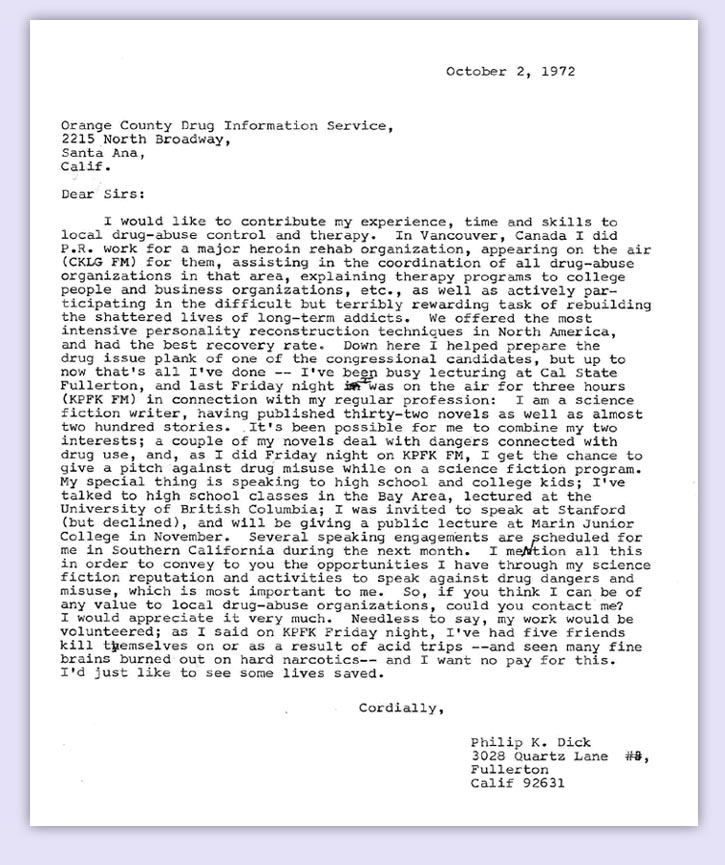

Who is Philip K. Dick?
1 Philip K. Dick: born halfway in the grave
Philip Kindred Dick and Jane Charlotte Dick were born prematurely in December of 1928 in Chicago. The twins spent their first weeks of life malnourished; Jane died in January of 1929 and on her grave were carved both her name and that of her brother (Carrère 1993). Philip K. Dick began his life with a tombstone to his name and haunted by the ghost of his twin sister.
I am damned always to be separated from her and with her, in an oscillation. (P. K. Dick 2011)
Dick was raised by his mother after his parent’s divorce: they moved from the San Francisco Bay Area to Washington DC, and then back to California when he was 9. His interest in science-fiction began shortly after he started high school, with sci-fi magazines: “it was called STIRRING SCIENCE STORIES and ran, I think, four issues. The editor was Don Wollheim, who later on (1954) bought my first novel … and many since” (Sutin 2005). He worked for a radio station and then a record store during high school, a job he kept during and after he attempted college in 1949. His time at the University of California was exceptionally short; he did not have time to declare a major before dropping out due to anxiety (A. R. Dick 1995). He studied philosophy and then theology on his own, and began writing science-fiction full-time in 1951 (P. K. Dick 1978). Although he tried to branch out from science-fiction in the late 50s and early 60s, only one of his non science-fictional works was ever published. Dick’s body of work is extensive and far reaching: it was republished many times, translated in 25 languages (according to Paul Williams who acted as the executor for his literary estate), and adapted to theatre, television and cinema. Despite his literary success, Dick lived a difficult life. In an untitled short story sent to a young Daniel Gilbert in September 1978, the main character (named Philip K. Dick1) describes himself:
“I may have been a success as a writer,” he continued, “but what does that matter really? Living alone year after year in a rented room, paying off the I.R.S. and my endless child support, waiting vainly for the right girl, the girl who, when she finally showed up, merely laughed at me.” Tears filled his eyes. “Being a giant of science fiction is not all that much,” he rasped. “It’s like Goethe said: the peasant with his hearth and wife and children is happier than the greatest philosopher.”
2 Addicts, under the face of God
Drugs and abuse were a major theme in Philip K. Dick’s life and oeuvre, his novel A Scanner Darkly is at least partially autobiographical and features drug houses, psychotic episodes and withdrawal (A. R. Dick 1995). To sustain himself and his families (Dick was married five times – May to November of 1948, 1950 to 1959, 1959 to 1965, 1966 to 1972, and 1973 to 1977 – and had three children), Dick used and abused drugs, mainly amphetamines, cannabis and antidepressants to alternatively bolster his writing and calm his anxiety (Sutin 2005). California in the 60s and 70s had a prominent drug culture which let Dick experiment with different substances. According to his third wife, Anne R. Dick:
Ray Nelson brought some [LSD] for Phil to take. The two of them sat together in Phil’s house for eight hours while Phil had a terrible hallucination, sweating, feeling completely alone, reexperiencing a spear thrust through his body, and speaking Latin, as he re-lived a life as a Roman gladiator. (A. R. Dick 1995)
This was the first and last time that Dick used LSD2, but visions of the Roman empire and of early Christians would become prevalent in his life. One such vision led him to convert to Anglicanism in 1964 (A. R. Dick 1995; Davis 2019) :
I looked up in the sky and saw a face[,] a vast visage of perfect evil […]. It had empty slots for eyes – it was metal and cruel and, worst of all, it was God. (P. K. Dick 2002)
Dick would later explain the vision as the result of an 8-hour writing session that acted as a form of sensory deprivation, but his conversion and his subsequent interest towards theology – Christian, Gnostic, Jewish, etc. – marked his writing and the way he experienced the world. Experiences such as this one contributed to his reputation as a drug user, but according to Nancy Hackett, his fourth wife and mother of his second daughter Isa:
When Philip was married to me, he never wrote except when he needed money. Then he would write a novel in six days by using amphetamines. (A. R. Dick 1995)
In 1971, after a series of incidents including a burglary, Dick lost his house to the drug users he had let in (P. K. Dick 1988). That year, he left for Canada where he attempted suicide by overdose of potassium bromide after being rejected by a woman he fell in love with in Vancouver (A. R. Dick 1995). Dick’s relation to drugs changed after this event and he engaged in outreach with rehabilitation and prevention organisations (P. K. Dick 2011).

3 “2-3-74”
The doorbell rang and I went, and there stood this girl with black, black hair and large eyes very lovely and intense; I stood staring at her, amazed, also confused, thinking I’d never seen such a beautiful girl, and why was she standing there? She handed me the package of medication [Darvon], and I tried to think what to say to her; I noticed, then, a fascinating gold necklace around her neck and I said, “What is that? It certainly is beautiful,” just, you see, to find something to say to hold her there. The girl indicated the major figure in it, which was a fish. “This is a sign used by the early Christians,” she said, and then departed. (Sutin 2005)
Dick’s most important drug fueled vision would come to him in February of 1974 (P. K. Dick 2011), after four years of writer’s block (Butler 2000). He was then married to Leslie Busby, a young woman who also acted as his secretary and went by the name of Tessa, with whom Dick had a son, Christopher. Dick and Tessa had, according to multiple accounts, a fusional relationship, although they were fighting on multiple trivial issues such as cleaning and cooking3 (A. R. Dick 1995; Sutin 2005). In February of 1974, while recovering from an impacted wisdom tooth extraction, and still under the influence of sodium pentothal, Philip K. Dick received a delivery from a woman wearing a gold pendant with an ichthus, an early Christian symbol. The sight of light reflecting off the ichthus triggered something in him: he experienced a pink beam of light transmitting information directly into his brain (P. K. Dick 2011). The experience overwhelmed Dick who found himself superposed between his own reality and the absolute conviction that the whole universe was stuck in 50 AC. In this world, the “Empire never ended” (P. K. Dick 1981b) and Philip K. Dick was, in reality, Thomas, an early Christian persecuted by Rome.
But the core of the difficult truths that Phil held dear in his last years lay in 2-3-74. No one can pass upon the unanswerable question: Were those events real? Phil himself had no doubt that something had happened, though he always retained as a possibility–as his friend and fellow SF writer K. W. Deter observes–the “minimum hypothesis” that they were self-delusion. (Sutin 2005)
In February and March of that year, Dick continued to experience visions which he attempted to describe, understand and analyse in journals that would, in the end, amount to more than 8000 pages, some manuscript and others typed on his typewriter (Itzkoff 2010). These visions shaped and informed Dick’s writing; his last novels Radio Free Albemuth, VALIS, The Divine Invasion and The Transmigration of Timothy Archer all focus on his religious experience and the pink beam of light.
A beam of pink light blinded him; he felt dreadful pain in his head, and clapped his hands to his eyes. I am blind! he realized. With the pain and the pink light came understanding, an acute knowledge; he knew that Zina was not a human woman, and he knew, further, that the boy Manny was not a human boy. This was not a real world he was in; he understood that because the beam of pink light had told him that. This world was a simulation, and something living and intelligent and sympathetic wanted him to know. (P. K. Dick 1981a)
The cardinal point which Fat had made to us regarding his experience with the pink beam which had injured and blinded him was this: he claimed that instantly – as soon as the beam struck him – he knew things he had never known. (P. K. Dick 1981b)
In VALIS, the pink beam reveals to the main character – Horselover Fat, a stand-in for Philip K. Dick himself – that his son has a dangerous, but easily treatable heart defect. The same thing happened to Dick who had his son Christopher tested for a potentially fatal inguinal hernia after one of his visions. The results of the tests were positive, and a surgery fixed Christopher’s heart (P. K. Dick 2011; Sutin 2005). The blurring of reality and fiction, divinity and decay, creation and entropy were central to Dick’s life and work: in his Exegesis and in discussions, he mentions writing “reports” rather than novels (Carrère 2004). Paul Williams, Dick’s literary executor warns readers: Philip K. Dick “recognizes his own unreliability and yet at the same time believes everything he says” (P. K. Dick 1988).
4 I am alive and you are dead
Emmanuel Carrère’s biography of Philip K. Dick, Je suis vivant et vous êtes mort, refers to one of Dick’s novel: Ubik, in which the mystery revolves around the whether or not the characters are dead or alive. In Ubik, Glen Runciter leads a team of “inertials” – people with the ability to negate psychic powers – to secure a Moon base from telepaths. After an explosion that claims the life of Runciter, Joe Chip, the mission technician, takes command of the team to rush their boss back on Earth to allow him to exist in artificial half-life. Joe and the other inertials are surprised to see signs of an entity trying to help them by any mean necessary as time and space begins to crumble around them. From his half-life pod, Runciter is silent, but still, it seems that he tries to using other means such as a message on the walls of the men’s bathroom:
“Jump in the urinal and stand on your head
I’m the one that’s alive. You’re all dead.Lean over the bowl and then take a dive
All of you are dead. I am alive.” (P. K. Dick 1969)
In the real world, Runciter is desperately trying to save his team and make them understand that they are, in fact, the ones who died on the Moon and are now suspended in half-life. As more and more of Joe Chip’s team succumb to the time anomalies, it becomes very difficult to ignore the hints that the world he inhabits is not real. On one hand, signs of Runciter’s interventions are everywhere, and on the other, Jory, another half-lifer with the power to consume consciousness to sustain himself tries to kill Joe. Joe is saved by a collective of half-lifers, who developed a way to repel Jory, and Runciter mourns the loss of his team. But the novel ends with Glen Runciter, alive and inhabiting the real world, finding the face of Joe Chip on the coins in his pocket, as if Joe was trying to communicate with him: as if Runciter was himself in a half-life fictitious world.
In February and March of 1982, a series of strokes left Philip K. Dick brain dead at the age of 53. He was disconnected from life support on March 2nd, eight years and ten days after the events of 2-3-74.
In this reality, we are alive and he is dead.
Bibliography
Footnotes
Dick often stages himself in his novels, either as Philip, Phil and even as Horselover.↩︎
In an interview he gave to Charles Platt, Philip K. Dick admitted to using acid one other time, but the dose was too weak to affect him more than hash.↩︎
In a long and incredibly funny letter to his then wife, Dick writes: “Well, here I am in sunny Cleveland, having won first prize in the Fullerton Stink Bug look-alike contest (first prize, which I won, is a week in Cleveland; second prize is two weeks in Cleveland)…. […] YOU HAVE WOUNDED MY HEART BY YOUR CRUELTY AND INDIFFERENCE AND YOUR HAUGHTY MANNER, FOR INSTANCE YOUR READING ALL DAY AND NOT DOING THE DISHES. More about this later.” (A. R. Dick 1995)↩︎